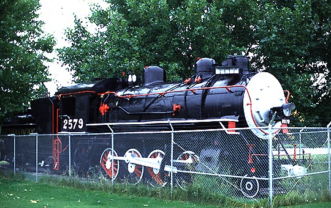

Last updated: 24 June, 2015
| Builder: | Baldwin Locomotive Works |
| Build #: | 27681 |
| Date: | 03/1906 |
| Engine #: | 2579 |
| Railroad: | Southern Pacific |
| Website: | |
| Email: | |
| Location: | Veterans Memorial Park, 579 Klamath Ave, Klamath Falls, OR 97601 |
| GPS: | 42.220066, -121.786704 Parking a little farther down Klamath Ave. |
| Phone: | |
| Status: | display |
| Notes: |
| Class: | C-9 |
| Gauge: | 4'-8½" |
| F.M.Whyte: | 2-8-0 |
| Drivers: | 57 |
| Gear Ratio: | |
| Tractive Effort: | 45,470 |
| Weight: | 217,800 |
| Weight on Drivers: | |
| Weight on Drivers: | 193,700 |
| Length: | |
| Boiler: | |
| Cylinders: | 22x30 |
| Top Speed: | |
| Fuel: | |
| Fuel Type: | Oil |
| Water: | |
| Steam psi: |